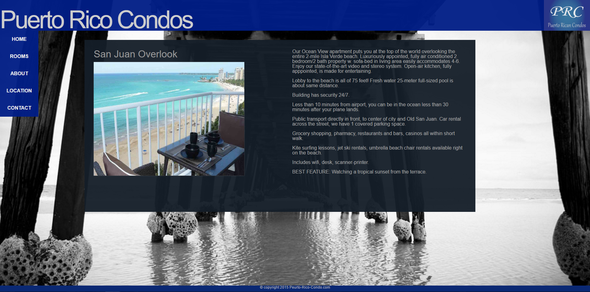

Portfolio
This portfolio was created as a way to display personal skills that I have improved upon over these past few years. You will be able to see my gradual progression in CSS, HTML, and javascript experience. You will find Webstites, Javascript Projects, and Media projects in this section.
Below is A canvas Project that recreates Iron Man using HTML canvas.
Various designed websiteds below
